不懂设计，
也能做出世界顶级的界面。
2026.09.24 THU · EP01 2026.08.07「会前十分钟」
用 Claude Design
做设计探索
三个真实项目，对应三种用法。
每个项目先讲我是怎么做的，再现场演示，最后回顾 Prompt 怎么写得更好。
三个项目，Claude Design 站在流程里的位置不一样
看第二行的路线：它是起点、是交接的中转站，还是开发途中的一次绕行。
「我是主理人」活动官网
- 起点
- Mkt 已经用 AI 做了一个站，但讲的故事和 deck 不一致，视觉也有四套
- 交出去
- 画布、独立 HTML、DESIGN.md、给 Mkt 那边 AI 的改造 Prompt
- 适合
- 从零设计一个页面，由你一个人主导到底
- 演示看
- Brief 怎么写、画布上怎么改、交付包里有什么
世界杯 HyperAgent
- 起点
- Ben 已经用 vibe coding 跑通了后端、钱包和一版黑色界面
- 交出去
- 整个项目导出：React 源码、离线单文件、审计清单、数据接口说明
- 适合
- 设计和工程两条线同时跑，最后要合成一个产品
- 演示看
- Primer 怎么用、它自己写的审计、导出后工程怎么接
Portfolio D · Token Universe
- 起点
- 我在 Claude Code 里改 alpha.token.im 的代码库，做了三个方向都不满意
- 交出去
- repo 里的一份设计参考，Claude Code 照着它在代码库里实现
- 适合
- 代码写到一半，发现得先停下来把设计方向想清楚
- 演示看
- 在两个工具之间来回切，Send to Claude Code 之后 repo 里多了什么
项目 1 · 介绍、Demo、回顾
项目 2 · 介绍、Demo、回顾
项目 3 · 介绍、Demo、回顾
总结与学习链接
「我是主理人」官网：在 Cowork 里直接出画布
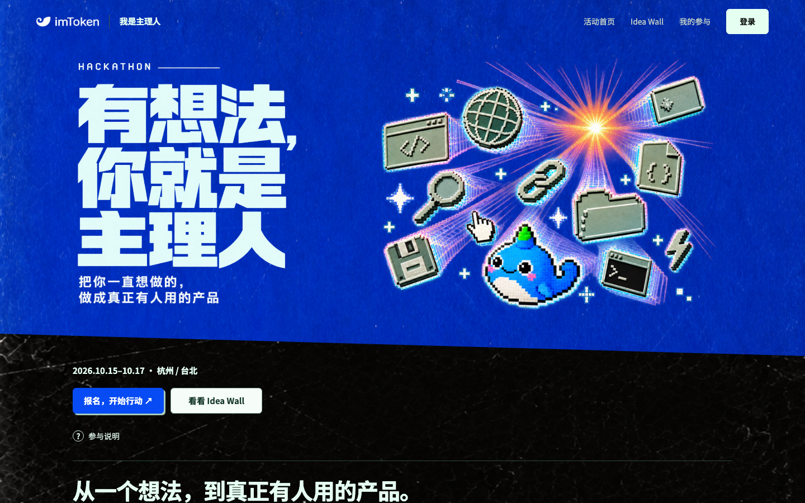
点击放大用了什么工具
- Claude Cowork + /design：在对话里调用，产出直接是 Claude Design 画布
- Google Drive 连接器读 39 页 deck 全文；Chrome 逐个路由走查现站
- general-purpose agent 负责构建，Playwright 截图自查
- Figma MCP 画主视觉，再回写到网站首屏
给了什么 Prompt
三层：我写的 22 KB 设计 Brief；启动 agent 的 300 字委派指令（下面这段）；给 Mkt 那边 AI 的改造 Prompt。
产出了什么
- 画布 3 个画板：桌面可交互整站 1440×7600、手机 390、主视觉 1920×1080
- 独立 index.html + kv.html + README（DOM 与交互对照表）
- DESIGN.md 240 行：token、层级、材质、禁用清单、自查表
- AI_PROMPT_改造现站.md：分内容、UI、功能三轮，附十条验收
用的时候要注意
- 画布文件（.dc.html）双击打不开，发给同事前要转成独立 HTML
- PNG / PDF 导出不嵌 Google Fonts，正式物料从 Figma 出
- 两人同时编辑会冲突，后保存的会被拉回前者的版本，适合一人主编
- AI 会把示例数据和猜的日期写得像事实：要求它标注，没定的留空
我的 Prompt 思路：先当导演和体系作者，最后才当编辑
整个项目在一个 Cowork 对话里完成。顺序很重要：先把事实拿全、把规则写成 Brief，再让 agent 去生成；我自己只在最后看截图、改偏差。
回顾：让 AI 少猜，靠的是一份写全的 Brief
帮我给「我是主理人」活动做一个好看的官网，风格现代一点，要有科技感。
一份 Brief 要写全这五样
- 口径：以哪份文档为准，冲突时听谁的
- 文案：逐字给出，不让它自己写
- 视觉规则：token、唯一的突破点、禁止项
- 结构：段落顺序写死，不许增删
- 验收：截图宽度、要点的交互、console
在 Claude Design 里这样改
- 大方向在对话里改；某个组件用行内评论；改字、挪位置直接在画布上动
- 反馈要能执行：「表单字段间距收到 8px」比「看起来不太对」有用
- 换方向之前，先让它把当前版本存下来
- 只把贯穿全站的变量做成 Tweak，比如强调色；文案写死在页面里
世界杯 HyperAgent：设计导出，交给工程师的 AI
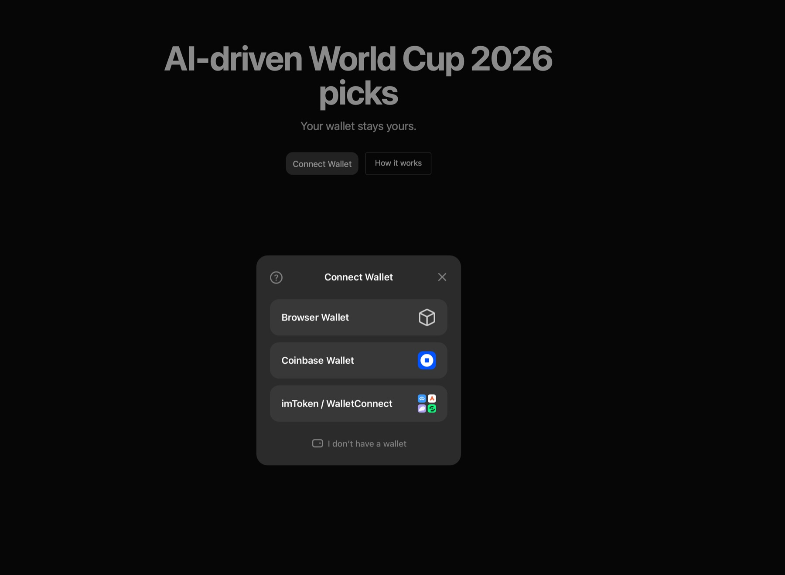
点击放大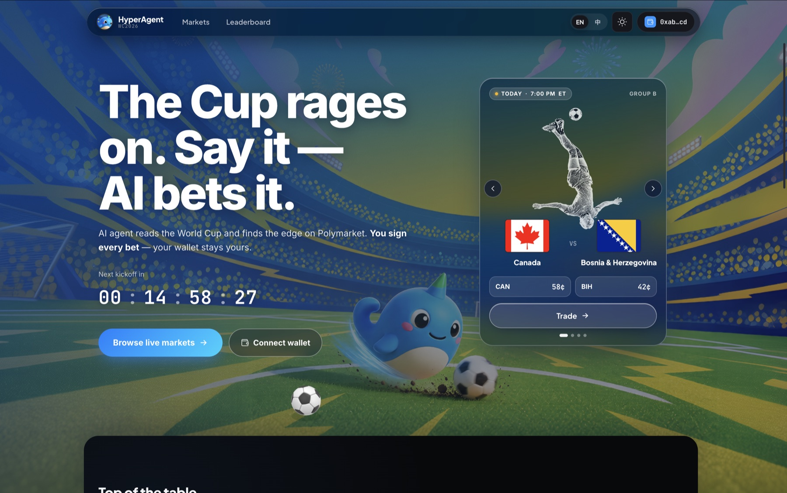
点击放大用了什么工具
- Claude Design：项目「world cup win with imToken」，所有界面都在这里做
- Weavy：跑出 8 个球员剪影和鲸鱼吉祥物姿态，风格统一
- 工程侧：Ben 用 Claude 读懂导出文件，Claude Code 接后端
- Vercel 部署，Discord 群里发链接
给了什么 Prompt
一份 Primer 贴在每次对话最前面，后面接单屏需求。Primer 叠了三层：v2（产品、参照、双主题 token）、Supplement、Visual Refresh（Azure 主色、玻璃材质、动效 < 250ms）。
产出了什么
- app/：15 个 JSX 组件 + tokens.css（双主题语义 token）+ data.js
- WC2026 HyperAgent - Offline.html：5.9 MB 离线单文件，双击就能看
- Audit & Plan：它自己查出 18 条问题，按 P0–P3 分四期修
- Data Interface Spec：实体、接口、原型字段到正式接口的对照
用的时候要注意
- 原型里的字段名就是接口契约：写进文档，工程照用，UI 不用返工
- 导出前先清理：没被引用的旧文件会误导对方的 AI，先移到 archive
- Primer 和绑定的设计系统冲突时，它会自己挑一个；审计把这条列成待决问题，要你拍板
- 截图看不出的问题要让它实际去点：主题切换后文字颜色残留、手机上横向溢出，都是点过才发现的
我的 Prompt 思路：不直接写，先在 Cowork 把话说清楚
三个对话空间分工：Cowork 负责理解项目、把我的话翻译成 Prompt；Claude Design 负责出画面；另开一个 Cowork 对话专门写 Weavy 的生图 Prompt。
回顾：规则写成 Primer 反复用，交出去之前先让它自审
做一个世界杯预测产品的首页，深色，有科技感，要高级。
一份 Primer 要写全这五样
- 产品和受众：一句话说清给谁用、解决什么
- 正反参照：要像谁、不要像谁，各 3–5 个，比形容词准
- 语义 token：双主题，按用途命名，不按颜色命名
- 字体、动效、响应式：写成数值，不写感觉
- 升级时写明覆盖哪一条：例如 Visual Refresh 注明覆盖 v2 §4
交给工程之前
- 先让它自审：每页在浅色、深色、桌面、手机下都实际点一遍（按钮复制这段 Prompt）
- 让它写数据接口说明：字段名就用前端现在绑定的名字
- 导出前清掉没被引用的旧文件；交给对方时附一句「先读 README 和接口说明」
- 有代码库的团队，可以在 Claude Code 里用 /design-sync 把真实组件和 token 同步进 Claude Design
Portfolio D：写代码途中，转去 Claude Design 探索
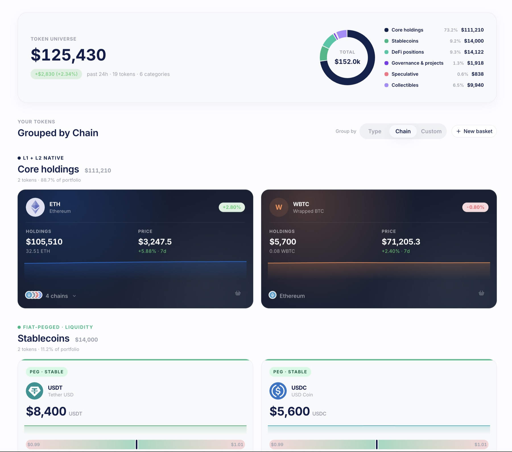
点击放大 点击放大
点击放大
用了什么工具
- Claude Code CLI：在 alpha.token.im repo 里工作，起点和终点都在这里
- Claude Design：「Cross-chain Send」项目里的 Portfolio D.html
- Send to Claude Code：把设计稿和 mock 数据送回 repo
- repo 自带的 AGENTS.md、DESIGN.md 约束实现
给了什么 Prompt
两份：给 Claude Design 的 Brief · Token Universe 2.0（8 条改动 + 自洽的 mock 数据）；给 Claude Code 的主 Prompt，分硬约束、起点假设和 DIVERGENCE 协议。
产出了什么
- design-reference/portfolio-d/：原始 JSX、CSS、mock 数据
- 同目录 README：写明这是只读参考，不能直接 import，以及怎么对接 repo 的类型
- playground 变体 TokenUniverseVariant，之后进入正式功能 features/portfolio-universe
- 按天拆好的提交：数据模型、卡片、审计、验证各一条
用的时候要注意
- 送回来的是参考，不是代码：CSS 里 6 个裸色值不在 repo 色板里，要先加成语义 token
- Claude Design 不知道 repo 的规矩，回到 repo 以 AGENTS.md 为准
- 首版会混进不该有的东西：Speculative、YOUR STAKE、第三方 Earn 按钮都在 v1 里，靠评审抓出来写进 Brief
- 让 Claude Code 偏离方案前先停下：用 DIVERGENCE 表列出想改什么、为什么，等你裁决
我的 Prompt 思路：在三个工具之间传递同一份上下文
Cowork 负责想清楚、写 Prompt；Claude Design 负责出方向；Claude Code 负责在代码库里实现。每次换工具，都先让 AI 把上下文整理成一份能独立使用的 Prompt。
回顾：Claude Design 想方向，Claude Code 守规则
把 Portfolio 页面改得更好看一点，参考一下 design-reference 里的设计。
什么时候该切去 Claude Design
- 在代码里连着改了两三轮，还是不满意
- 问题出在方向和结构，不在实现细节
- 需要把几个方向并排比较
- 需要不写代码的同事一起看、一起改
来回切换时注意
- Send to Claude Code 之后本地读不到设计，就在导出里选「下载 zip」，解压后让 Claude Code 先读里面的 README
- 设计参考放在单独目录，README 写明只读，以及怎么对应到 repo 的类型
- 会话变长、开始跑偏时，新开一个会话，重贴主 Prompt 和上一轮的裁决结果
- 规则分三层写：硬约束不许碰，起点假设可以挑战，开放区留给它发挥
三种用法，按你手上的情况选
| 用法 | 什么时候用 | 从哪里开始 | 最后交出去的 | 最容易出错的地方 |
|---|---|---|---|---|
| 在 Cowork 里直接出画布 项目 1 · 我是主理人 | 从零做一个页面，由你一个人主导到底 | Cowork 对话里调用 /design | 画布，再转成独立 HTML 和 DESIGN.md | 把画布文件直接发给别人，对方打不开 |
| Claude Design 项目导出交接 项目 2 · 世界杯 | 设计和工程同时推进，最后要合成一个产品 | 一个 Claude Design 项目，每屏一个对话 | 整个项目导出，附审计清单和数据接口说明 | 导出包里夹着旧文件和假数据，对方的 AI 照单全收 |
| Claude Code 途中转去探索 项目 3 · Portfolio D | 代码写到一半，发现方向本身没想清楚 | Claude Code，切到 Claude Design，再 Send to Claude Code | repo 里的设计参考，加上照着它做的实现 | 把参考当代码直接搬，绕过代码库自己的 token 和组件 |
用好 Claude Design 的七个做法
每一条都来自上面三个项目，标签写着出处。
先把事实拿全，再开画布
口径（deck、PRD）、现状（现有页面）、约束（设计系统）三样缺一样，后面的生成都在猜。
项目 1：这一步花了 1 小时，是最不能省的把感觉写成规则
「轻且透」是感觉，「白色 58% 透明 + 20px 模糊」是规则。感觉它会随机发挥，规则它会照做。
项目 1 的 DESIGN.md · 项目 2 的三层 Primer一屏一个对话，一次要齐变体
每屏同时要手机和桌面、浅色和深色。第一轮看方向，第二轮抓细节，第二轮仍然带着 Primer。
项目 2数据先自洽，再让它画
总额、占比、盈亏都能复算，并写明「一个数字都不许改」。字段名定好，后面就是接口。
项目 3 的 Brief · 项目 2 的数据接口说明让它自己检查
要求它截图、逐项点交互、看 console，并回报偏差。很多问题只有点过才会出现。
项目 2：18 条问题里 3 条 P0 是点出来的交出去之前，想清楚谁来用
同一份设计：画布给设计师，HTML 和 README 给工程，DESIGN.md 给约束，Prompt 给对方的 AI。
项目 1、项目 2回到代码库，以代码库为准
设计稿是参考。颜色换成代码库的语义 token，组件用已有的，冲突时停下来问人。
项目 3一句话
生成之前先定义：讲什么、按什么规则画、怎么算合格，三样写成文字再开工。
它做不好的，和必须你来做的
- 画板之间状态不共享，桌面和手机的交互各管各的
- PNG、PDF 导出不嵌 Google Fonts，中文会回退成系统字体
- 画布文件不能直接分发，要先转成独立 HTML
- 两人同时编辑会冲突，适合一人主编
- 自信地写错：示例数据、猜的日期，写得和事实一样
- 热心地补充：加上你没要的段落、动效和颜色
- 规则冲突时自己挑一个：项目 2 的 Primer 和设计系统打架，它先按自己的判断做，审计时才列出来
- 越改越偏：改到第五轮，颜色悄悄多了两种
- 判断这个页面到底要讲什么
- 在几个都画得出来的方向里选一个
- 决定哪些地方不改，并说得出理由
- 没定的信息留空，不让它编
- 品牌资产宁可绕路去拿原图，也不让它重画
明天就能用的起手 Prompt：七段结构
三个项目的 Prompt 长短不一，结构都是这七段。第 ⑤ 段最长，也最值得花时间。
「不要做的事」写成清单，它会照做；「适当发挥」这种话，每次理解都不一样。
事后去哪里学，有问题去哪里找
所有链接都可以直接点。官方链接在 2026-09-24 核对过。
官方入门START HERE
Claude Design 产品页能做什么、FAQ、合作工具claude.com/product/designGet started with Claude Design帮助中心：写 Prompt、迭代、导出、交给 Claude Codesupport.claude.com/en/articles/14604416-get-started-with-claude-designSet up your design system帮助中心：导入设计系统，/design-syncsupport.claude.com/en/articles/14604397-set-up-your-design-system-in-claude-designIntroducing Claude Design2026-04-17 发布介绍www.anthropic.com/news/claude-design-anthropic-labsGetting Started with Claude Design网络研讨会，2026-09-03，可回看www.anthropic.com/webinars/getting-started-with-claude-design写好 PromptPROMPTING
Prompt engineering overview官方文档入口platform.claude.com/docs/en/build-with-claude/prompt-engineering/overviewPrompting best practices清晰、示例、结构化、角色platform.claude.com/docs/en/build-with-claude/prompt-engineering/claude-prompting-best-practicesPrompt 交互式教程GitHub，一步步练github.com/anthropics/prompt-eng-interactive-tutorialClaude Academy免费课程与教程academy.claude.com/配套工具TOOLS
Get started with Claude Cowork项目 1 的工作环境support.claude.com/en/articles/13345190-get-started-with-claude-coworkUse skills in Claude/design 这类 skill 怎么用support.claude.com/en/articles/12512180-use-skills-in-claudeClaude Code 文档项目 2、3 的工程侧code.claude.com/docs/en/overview遇到问题HELP
Claude 帮助中心先搜这里support.claude.com/en/Claude Code · GitHub Issues例：#69246 本地读不到设计时改用 zipgithub.com/anthropics/claude-code/issuesClaude Community社区讨论claude.com/community今天的材料INTERNAL
资料包 · case-bossgame/README.md项目 1 的七步复盘与六个 Prompt 模板design-kit/case-bossgame/README.md项目 1 · Claude Design 画布需公司账号claude.ai/code/artifact/8a78ab6b-6bd5-4dc5-8d01-e36aeed6b117项目 2 · world cup win with imToken需公司账号claude.ai/design/p/e28a36e3-3aa1-46ac-b114-54423e9a576cimToken Web Design SystemClaude Design 里的设计系统claude.ai/design/p/8cfcb0fa-99a5-4196-ae78-a5899c2cf013设计师花十年练出的六项能力，拆开来看
设计判断交给 AI，它从几万个顶级产品里学过。你负责的是只有你自己知道的部分：你的用户和你的选择。
| 设计师做的 | 你做的 | AI 做的 |
|---|---|---|
| 定义问题、结构、状态 | 你回答七个问题 | 整理成 PRODUCT.md |
| 知道什么是好 | 你挑一张气质相近的参照 | 从参照中提炼九条规则，写进 style-lock.md |
| 保持一致 | — | 每次生成都遵守 style-lock 的规则 |
| 看出哪里不对 | 你把原型点一遍，再从三条意见里选一条 | 另一个 AI 当评委，只改一处并出前后对比 |
| 交付前自查 | 你对照 10 项清单逐项核对 | 跑 34 项审计，按严重程度排序 |
| 讲清楚 | 你把演示排练三遍 | 主视觉、镜头、六分钟 Pitch 稿 |
「你做的」这一栏里，没有一项需要设计知识。
品味可以借用，参照已经替你收好了
AI 都看过
Linear、Revolut、Wise、Compound 的界面，它都学过。它缺的不是能力，而是不知道该参考哪一个。
设计团队的 UI 3.0 Mood Board
共 8 个板块，每张图都附一句它值得借鉴的地方：不是「好看」，而是它解决了什么问题。右边六张就是这样标注的。
给你的是一份菜单
17 份可借鉴的风格，每份对应一个真实产品，另有 2 条不要碰的基准线。你只需要从中挑一张。
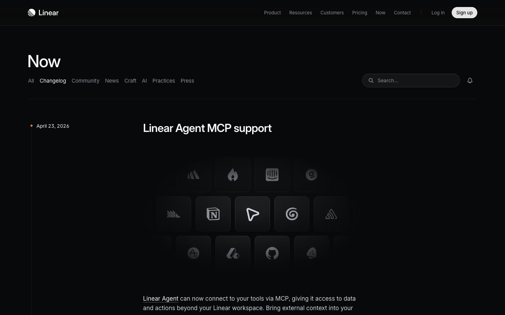
点击放大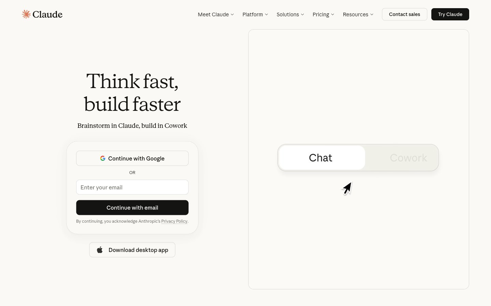
点击放大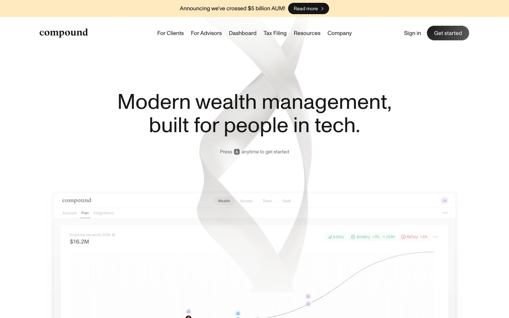
点击放大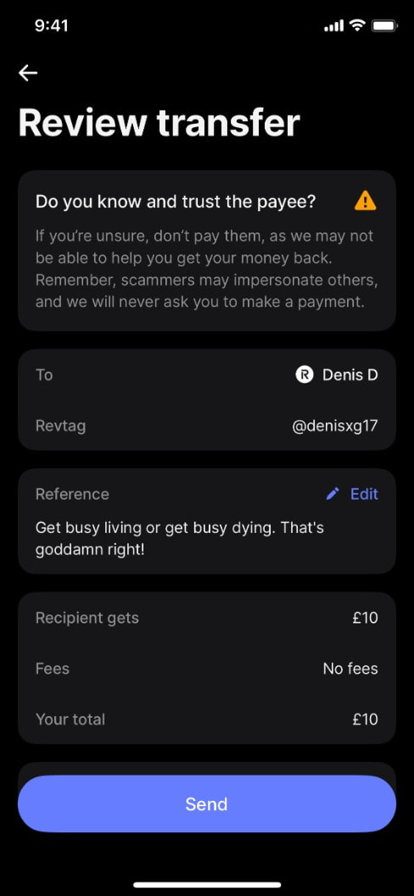
点击放大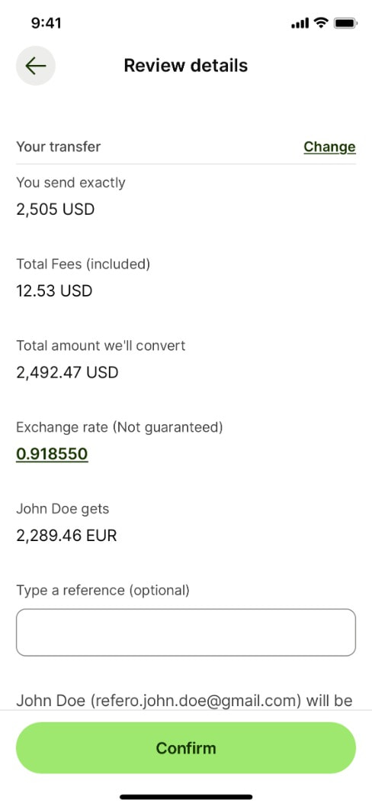
点击放大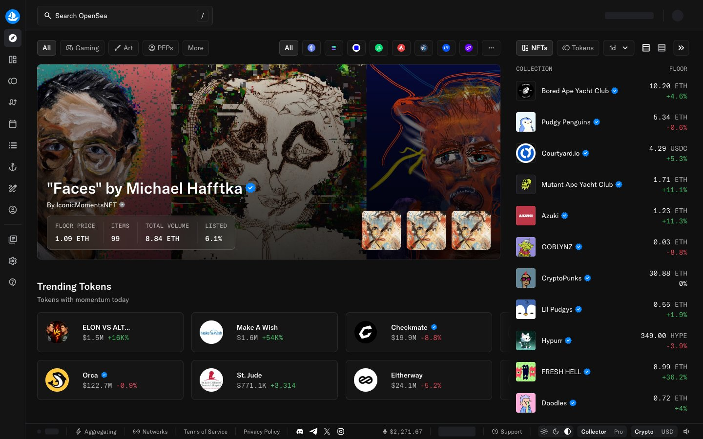
点击放大用六步把一个想法从头做到尾
案例是 Mako 在 Idea Wall 上提的「Agent 付费预算控制」。
做了七成的团队，可以从第 4 步开始。
写清需求
找参照、定风格
生成首版
评审迭代
上线前检查
包装呈现
第 5、6 步的大部分工作也由 AI 完成。你要做的是对照清单把原型再过一遍，然后从 4 张主视觉里挑 1 张。
开场
第 1–4 步，含现场演示
第 5–6 步
三天作战地图 · 资料包 · Q&A
跑一遍
拿一位同事的点子，从零走完第 1–4 步：
写清需求、找参照定风格、生成首版、评审迭代。
一位同事的点子：让 Agent 花钱之前先问我一声
Agent 付费预算控制
放到 imToken 的场景里：用户给 Trading Agent 设了每日 100 USDT 的预算，今天已用 82。这时 Agent 发起一笔 24 USDT 的请求，会超出预算 6。
手机弹出通知，只有一个数字、一个按钮。
看不懂的人会直接点拒绝。
第 1 步 · 写清需求：七个问题，没有一个是设计术语
用户用它来办成什么事？
§1用户最紧张的是哪 10 秒？
§2主要步骤里，哪一步不能反悔？
§3没网、出错、没有数据时，屏幕上写什么？
§4每一屏，用户第一眼必须看到什么？
§5这一轮不做哪 5 件事？（防止 AI 顺手加功能）
§6怎么算做完？（走完 A、走完 B 分别得到什么）
验收逐个提问，写成 PRODUCT.md
它复述的三句话对不对
第 2 步 · 找参照、定风格：按用户的动作搜，不按品类搜
| 我实际输入的搜索词（Refero MCP，09/23） | 搜到的 |
|---|---|
| approve payment request confirmation with amount and limit | Uber Eats · Shopify · Airbnb 的支付方式页，按品类搜，拿到的也只是品类 |
| review transfer confirmation … before sending money | Revolut 和 Wise 的转账复核屏，正是批准前让人看清后果的那一步 |
挑选的标准不是哪个好看，而是哪个最接近我的用户正在做的事。
前提是已连上 Refero MCP（需要付费的 Pro / Team / Lifetime 账号，并完成浏览器授权；价格以官网为准）。接入方式：Claude → 设置 → Connectors 添加 Refero；Cursor 和 Claude Code 用 MCP 配置。
没有账号的话，可以打开网页版同样按动作手动搜；也可以把 Prompt 里的「用 Refero MCP 搜」换成「我附上 3 张截图」，自己截 Revolut 或 Wise 的确认页贴进去。
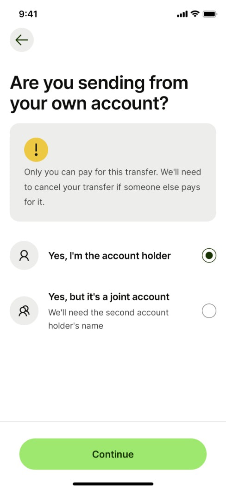
点击放大整体风格像谁？从菜单里挑一张
17 种可参考的风格和 2 条要避开的基准线，各对应一个真实产品。点开能看到借鉴什么、哪里容易做坏，可一键复制给 AI。本案例选的是 04。
你给参照图和三个回答，AI 写出九条规则，你只读三句
参照：04 Compound
心情：有点紧张
像：不说废话的私人银行家
绝不能像：赌场、AI 模板
2 形状 圆角 12–16 · 线多于面
3 字体 Jakarta 600 · Inter · Mono 数字
4 色彩 #007FFF 只给主操作 · #A78BFA 只给 Agent
5 密度 一屏只有一个决定
6 层次 字号 + 1px 边框 · 阴影只给浮层
7 动效 150/240/360/500ms · 只在状态变化时动
8 图像 无插画人物 · Lucide 1.5px
9 禁止 渐变按钮 · emoji · 装饰 3D · 标语 …
「层级靠尺寸与留白，不靠颜色。」
「整屏只有一个蓝色，给最重要的那个动作。」
「数字最大，其余都退后。」
像那个人就继续，不像就换一张。
第 3 步 · 生成首版：拿到结果后，亲手点三次
做 Website 时，交付格式改为「1440 宽单页 + 390 宽响应式」；做设备时改为「手机端 + 设备屏两个画面，设备屏四态：选择 → 预览 → 发送 → 确认 / 离线」
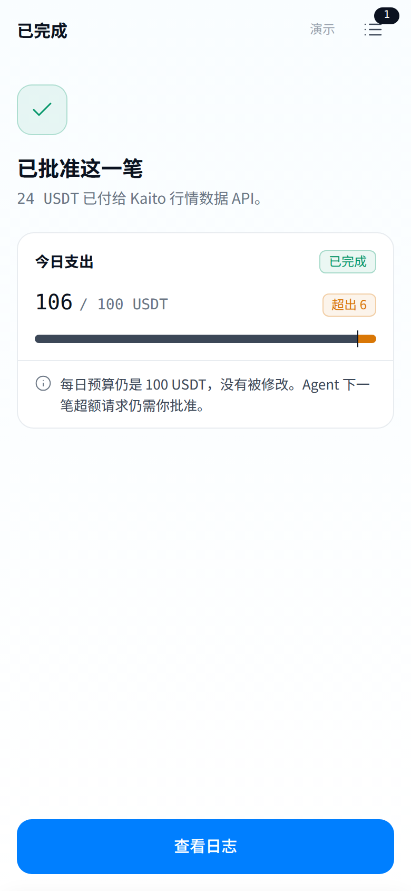
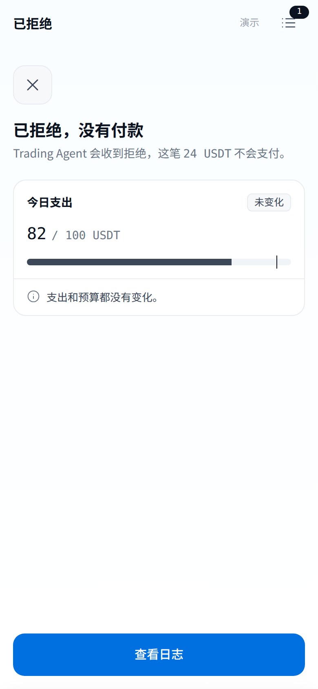
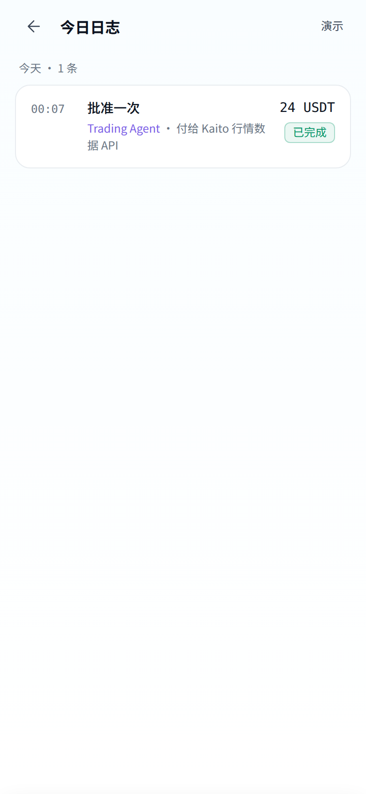
能生成出来，不代表能用。这三次点击对应第 1 步写下的「怎么算做完」，只有真的点过才知道。
方法不变：要带走的是四样东西，而不是某个工具
留给你
| 四样东西 | Claude | ChatGPT / Codex | Gemini | Kimi · Cursor · 其他 |
|---|---|---|---|---|
| 上下文文件 | Project 说明 · CLAUDE.md | Custom GPT 指令 · AGENTS.md | Gem 指令 · GEMINI.md | 系统提示 · AGENTS.md |
| Skill | .claude/skills/ | Codex .agents/skills/ | Gemini CLI | 支持就装，不支持就贴 AGENTS.md |
| MCP | Connectors · Claude Code | 开发者模式 · Codex | Gemini CLI | Kimi · Cursor |
| 从零到原型 | Artifacts | Canvas | AI Studio Build | v0 · Lovable · Bolt |
跟着你走的是 PRODUCT.md、style-lock.md、Prompt 和你的三次点击。换平台时这四样一个字都不用改；如果两个平台差异很大，先怀疑文件没写清，再怀疑平台。
第 4 步 · 评审迭代：换个 AI 当评委，每轮只改一处
同一个对话里的 AI 会为自己的作品辩护，所以作者和评委要分开。
三条里哪一条让用户最不容易做错，就选那一条。
不懂设计也能检查：每条的「因为」后面必须指明 PRODUCT.md 的某一节，没有指明的直接划掉。
「只对这一笔生效」说明框 现在是 13px 灰底、整屏最弱的一段字，和「批准后」隔着 111px 明细 → 应该挪进「批准后」，进度条下两行 14px 无底色：「每日预算不变，仍是 100 USDT」「只放行这一笔，下一笔超额还会问你」→ 因为关键时刻「我批了会怎样？会不会把预算改了？」要在同一块答清
底部明细「每日预算 / 今日已用」 现在和上方重复，82、100 各出现 3 次 → 应该删掉这两行，「请求有效期」改 12px 挪到地址右侧 → 因为这些在 PRODUCT.md 里是「其余」，只该占最小层级；「一屏一个决定」
链上失败 →「稍后处理」→ 回卡片 现在「拒绝」40% 透明禁用、没有说明 → 应该让「拒绝」保持可用，副标题换成「上次批准没有完成，没有扣款。可以重试，也可以拒绝」→ 因为主任务流是「批准一次 ｜ 或 拒绝」；质量标准 #4 失败状态有下一步
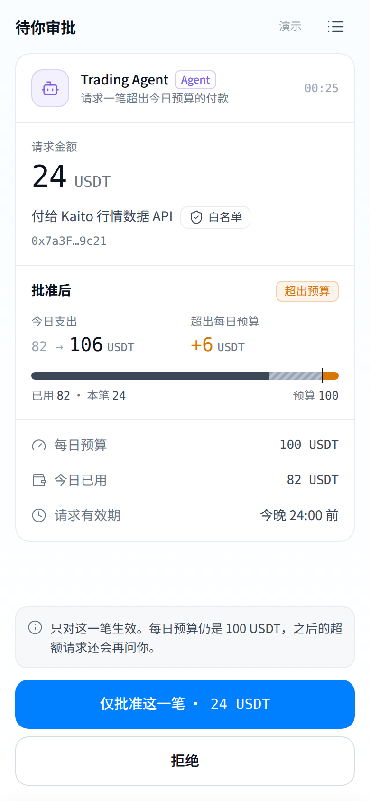
第 1 条：灰框在按钮上方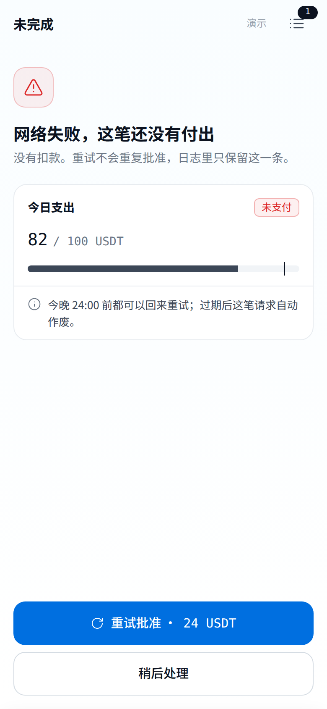
第 3 条：链上失败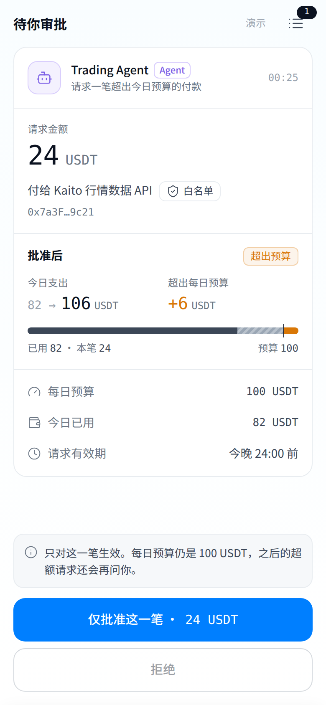
第 3 条：回卡片后「拒绝」禁用只能改一处改第 1 条。它直接回答了关键时刻的疑问「会不会把预算改了」，看不懂的人会直接点拒绝（第 25 页）。评委原话：对 10 秒内做决定帮助最大。
五轮改动，没有一处需要设计知识
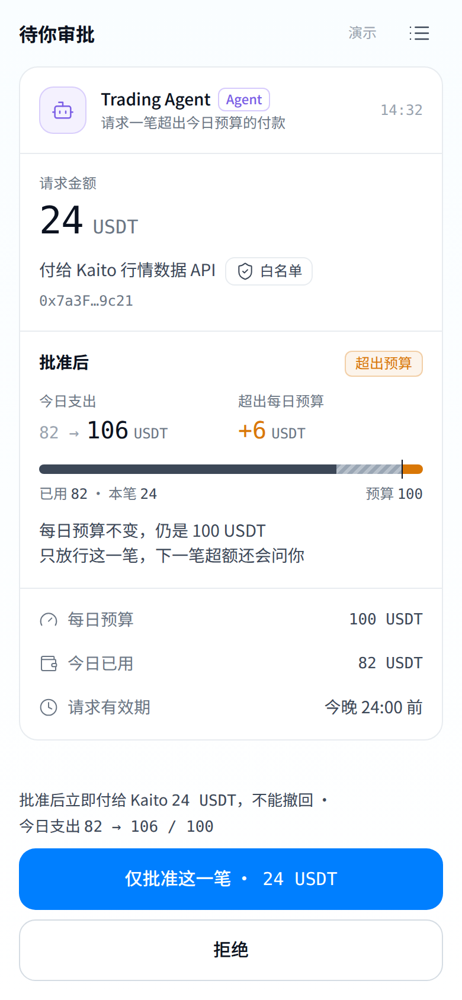
点击放大| DECISIONS | 改了什么（09/24 真实记录） | 因为 |
|---|---|---|
| #1 · R1 评委 | 「只对这一笔生效」从灰框挪进「批准后」，改成两行 14px 文字，不加底色 | 「会不会把预算改了」要和「批准后会怎样」在同一块答清 |
| #2 · R2 评委 | 按钮正上方加一句：「批准后立即付给 Kaito 24 USDT，不能撤回 · 今日支出 82 → 106 / 100」 | 批准不可逆；全页原本没有一处写「不能撤回」 |
| #3 · R3 评委 | 断网时「重试批准」亮着、点了没反应 → 按钮上方加「网络已断开，恢复后才能重试。」，按钮先禁用 | 质量标准 #4 失败状态有下一步 |
| #5 · 审计 A1 | 关着的「演示」面板仍能 Tab 聚焦，误按 Enter 会把「已批准 106」重置回待审批 → 关着时 inert | 连点不会批准两次；焦点不被遮挡 |
动效的作用，是告诉用户刚刚发生了什么
| 状态变化（箭头） | 动作（只有一个） | 时长 |
|---|---|---|
| 默认 → 按下「仅批准这一笔」 | 按钮在原位换成「正在批准 · 24 USDT」并锁定，不变灰 | fast 150 + normal 240 |
| 等待链上确认 → 成功 | 徽章在原位淡入，对勾一笔描出；不放大，不弹跳 | normal 240 / soft 360 |
| 今日支出 82 → 106 | 旧数 82 向上退出，新数 106 从下方进入；这一行绿底褪去 | hero 500 以内完成 |
| 默认 → 已拒绝 | 审批卡片下沉 12px 并淡出，表示这条请求已撤下 | normal 240 ease-in |
| 等待 → 网络失败 | 「重试 / 稍后处理」从下方 8px 处升起，不抖动 | normal 240 |
数字不做 count-up。滚动过程中出现的 90、97 是假数字，钱包里出现假数字就是事故。
第一轮只列动效表，不写代码，你回复「开始」后才实现。时长只用四档：150 / 240 / 360 / 500。
每个动作都说得出从哪到哪；没点就不动；数字直接替换；连点只生效一次；动画没播完也能点下一步
新区块只在第一次进入时淡入并上移 16px，时长 360ms；不做视差，不劫持滚动
设备屏：发送中 → 成功 / 离线，每个状态只配一个动作；三种及以上状态才用 Rive
数字直接替换，不做 count-up；表单提交后，在原位换成一行结果
已经做了七成？从第 4 步开始，一天三轮
失败、空、离线状态都要点到
新开对话，用 Prompt 05
选让用户最不容易做错的那条
Prompt 06，出前后对比图
把改动和原因记进 DECISIONS.md
最重要的东西最大、最先被看到。
达标：每条批评都引用了一条标准
本案例 R1：「预算不变」挪进「批准后」
按钮文案写清动作、范围和后果。
达标：界面上没有「确认 / 提交 / OK」
本案例 R2：按钮上方写清「不能撤回」
失败、空、离线，每一种都有下一步。
达标：失败状态点得出来，而且能重试
本案例 R3：断网时说清下一步
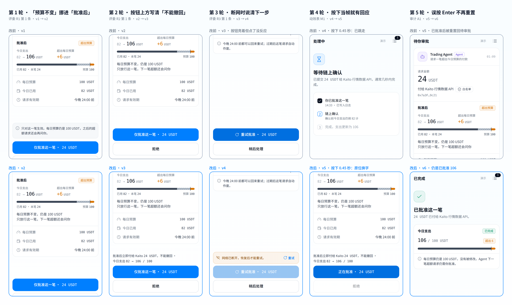
点击放大真实案例：比赛官网改版，先写成文字再生成
导演：这个站要讲什么
A1 · P0 · 定位矛盾
位置：首页 hero 眉标 HACKATHON
期望：首屏传达「这不是黑客松，是主理人选拔」，让读者在 5 秒内知道这次和以往活动的本质区别。
体系作者：把审美要求写成规则
§7 眉标格式固定：IMTOKEN 内部 · 2026.10.15–17 · 杭州 / 台北
§8 禁用（出现任意一条即不合格）：标题做成图片
编辑：看截图复查
署名「昆妮 · Queenie」出现两次，改掉一处。
「10.15」浮块压在面板上，判断成立，不改。
我自己动手 4h · Agent 构建 3h · Figma 1h
已经做了七成的产品，如果也像这个站点一样有四套视觉，就别从第 4 步开始，先回到第 1–2 步，把要求写成文字。
检查与呈现
上线前检查，保证它不出错；包装呈现，让评委记住它。
判断仍然交给 AI，你要做的是核对清单、挑选素材和排练。
第 5 步 · 上线前检查：AI 检查 34 项，你核对 10 项
AI 的回答原文：「只有 30 分钟：改这三项」
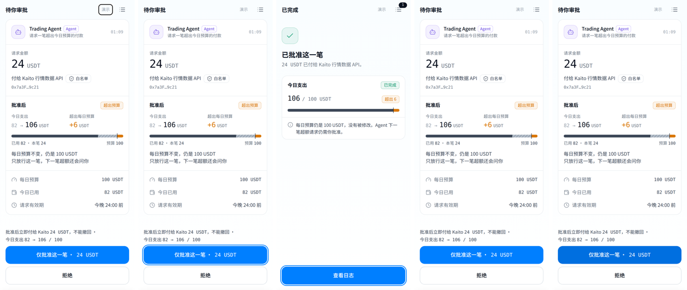
| 主任务流真的能点通 | 失败状态也点得出来 | 过 |
| 5 秒测试 | 没见过的人看 5 秒，说出这是什么、能做什么 | 找真人 |
| 不可撤销的那一步 | 按钮上方写明后果 | 过 |
| 没有 AI 味 | 常见的 5 种 AI 味（紫蓝渐变、emoji、「重新定义」、渐变按钮、没有失败状态）最多出现 1 种 | 过 |
| 文字够清楚 | 对比度 ≥ 4.5 : 1，让 AI 计算 | 未过 |
| 按钮够大 | 不小于 44px，让 AI 测量 | 未过 |
| 只用键盘 | 按 Tab 能走完主流程 | 过 |
| 截图转黑白 | 主次仍然分得清 | 过 |
| 前后对照图 | 准备一张，Day 1 → Day 3 | 第 6 步做 |
| DECISIONS.md | 至少 10 行 | 5 行 |
第 6 步 · 包装呈现：概念镜头只占片子的 0–5 秒
- 开场需要一种情绪：深夜、紧张、一笔钱停在门口
- 真实录屏已经录好，只缺一个开场
- 队里有人已经有账号和额度
- 用它生成产品界面：文字、点击和数据都不能保证正确
- 真实录屏还没录好，应该先录屏
- 为了这一个镜头临时注册、付费
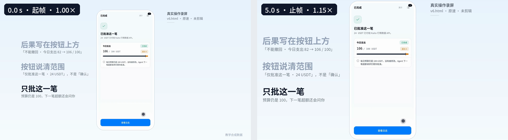
点击放大第 6 步 · 包装呈现：剪一支片子，真实录屏是主角
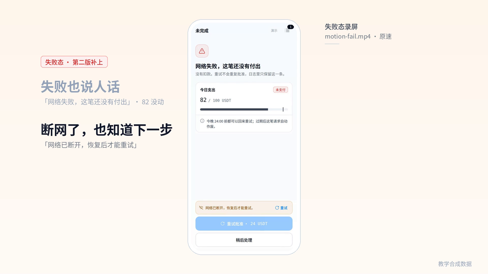
| 0–5 | 「我盯着『确认』看了十秒，最后点了拒绝」分三行淡入 | 字卡 |
| 5–8 | 「超预算的每一笔，你点一下才放行。」 | 字卡 |
| 8–26 | 读后果说明 → 点「仅批准这一笔」→ 等链上确认 → 82 变 106 → 看日志 | 真实录屏 |
| 26–31 | 网络失败，显示「这笔还没有付出」，82 没有变；断网提示条说明为什么点不动 motion-fail.mp4 3.0–8.4 s | 失败态 |
| 31–37 | v1 和 v6 卡片并排，三处改动各配一句「因为」（DECISIONS 第 1–3 行） | 截图 |
| 37–41 | 再说一遍主张，加上署名，注明教学合成数据 | 字卡 |
六分钟里，评委记住的不是功能数量，而是用户的变化
| 0:00 | 开场问题 · 一个具体的人、一个具体的时刻，不是竞品，也不是「行业痛点」。 |
| 0:45 | 一句话主张 · 要包含听众的利益。比如「超预算的每一笔，你点一下才放行」，而不是「预算控制功能」。 |
| 1:15 | Demo · 真实点击 · 把主任务流走一遍，其中要有一个失败态。视频只作备用。 |
| 3:30 | 前后对照 + 为什么 · 三处改动各讲一句「因为」，内容直接取自 DECISIONS.md。 |
| 4:30 | 商业与下一步 · 数字要有参照：不说「DAU 1 万」，而是说「每天有 1 万次，用户不用再盯着确认按钮」。 |
| 5:30 | 回到那句话 · 把主张再说一遍，发出加入号召后谢幕。之后多说都会减分。 |
Demo 难免出问题，出问题时你有三级备用方案
今天我的现场演示就准备了 L1 和 L2，也就是第 30 页那两个备用按钮。
现场真实点击
在本机用本地文件运行，离线也能跑。上台前 10 分钟在投影上走一遍，关掉其他标签页和通知。
今天第 30 页用离线 v1.html（现场生成的就是首版）
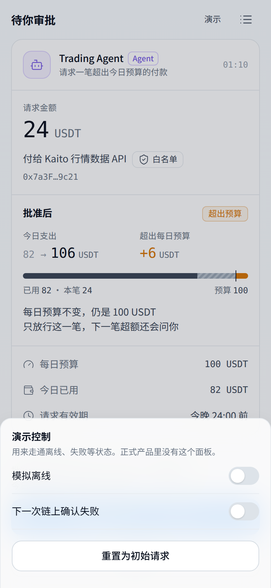
18 秒本地录屏
提前录好主任务流，存成本地 MP4，不依赖网络。开场前就在另一个窗口打开，暂停在第 8 秒。
前后对照图加讲解
一张 Day 1 → Day 3 的对照图，三处改动各配一句「因为」。什么都打不开时，靠这张图也能讲下去。
三天走完六个步骤，每天都有一条收工线
前一晚先准备好第 1、2 步，之后每天达到卡片底部那条线就收工。
准备
- 你回答七个问题（Prompt 00a），AI 据此写出 PRODUCT.md
- 你挑一张参照图、回答三个问题（Prompt 00b），AI 写出 style-lock.md
- 安装资料包：Skill、AGENTS.md 或网页粘贴，三选一
找参照、生成首版
- 上午：说清用户要完成的事，AI 用 Refero 找 3 张参照
- 中午：团队投票 5 分钟，选最贴合用户的一张
- 下午：用 Prompt 04 生成首版，你亲手把它点一遍
- 收工：从三条批评里选一条，写成 DECISIONS 的第一行
评审迭代、上线前检查
- 三轮评审依次改层级、文案、状态，你每轮选一条，AI 只改一处
- 傍晚第 4 轮做动效：用 Prompt 06m，慢放 2× 核对 5 项
- 收工前做上线前检查：AI 跑 34 项审计，只修阻断和误解两类
包装呈现
- 上午：用 record.py 录主流程和失败态，按镜头清单剪成 30–45 秒（本案例 41 秒，Prompt 11，真实操作至少占 40%）
- 概念镜头不超过 5 秒；主视觉可选，从 4 张里挑 1 张
- 午后：做前后对照图，AI 写讲稿、你删到 6 分钟，再排练三遍
散会后你会拿到这些资料，在哪个 AI 工具里都能用
全是 Markdown 文件，Claude、ChatGPT、Gemini、Kimi、Cursor 都能读。
DAY-PLAN · 三天安排
每天做哪几步、每件事的达标线，以及上台前的 10 项底线。
PROMPT-PACK · 15 条
从 00a 到 11 按六步排好，改掉方括号里的内容就能粘贴；01b、00b、05、06、06m、09、10 附有真实填写示例。
模板 · 6 个 Skill · 三层安装
PRODUCT、style-lock、DECISIONS 三份空白模板；装 Skill、放 AGENTS.md 或网页粘贴，三选一。
TOOL-DEMOS · TOOLBOX · CORE
五个工具的用法、工具与模型地图，以及 CORE 里的 19 份风格菜单和 34 项审计原稿。
MOTION · 交互动画
四档时长 150 / 240 / 360 / 500ms；Prompt 06m 只改动效；慢放 2× 核对 5 项。
FILM · 宣传片
五段结构、镜头清单、record.py 录屏脚本，以及生成 30–45 秒短片的 Prompt 11。
examples · Agent 消费审批
课上案例实际跑出的全部产物：v1 到 v6 原型、3 轮批评、DECISIONS 5 行、34 项审计、动效录屏。
case-bossgame · 比赛官网改版
真实项目的复盘索引：前后对照、七步与六步的对应、五个坑。全文找 Wilson 要。
这份 deck 也是按这几步做出来的
我写给 AI 的需求：听众是谁、60 分钟大屏演示、不花钱、素材注明真假。
EP01 那份 deck 和它的 SLIDE-SPEC：用方块堆叠的插图，每页只讲一个判断。
每版只给一句批评，下面就是全部五条。
每一版我都在 1920 和 1366 两种屏宽下翻一遍，看截图检查。
| V1 | 33 页，结构完整。批评：「没有对齐 EP01 的规范。」 |
| V2 | 对齐了，但风格图鉴是画出来的示意卡。批评：「示意图代表不了风格，用 Refero 的真实产品。」 |
| V3 | 换成 19 张真实参照，内容专业了。批评：「视角错了：不是教大家当设计师。」 |
| V4 | AI 先交回一轮只换措辞的改写。批评：「先重想框架，不要换词。」 |
| V5 | 用自造的口诀串起六步，还模拟了上台前的场景。 批评：「不要自造『答·指·点·选』这种词，也不要模拟上台前 20 分钟。」 |
| V6 | 你们现在看到的：六个平实的步骤，全程一个案例。 |
不懂设计，
也能做出世界顶级的界面。
今天就讲到这里，10/15 比赛第一天见。
Confu · 设计师 AI 工具箱 EP02 · 我是主理人 赛前培训 04 · Wilson Wang · imToken UXD